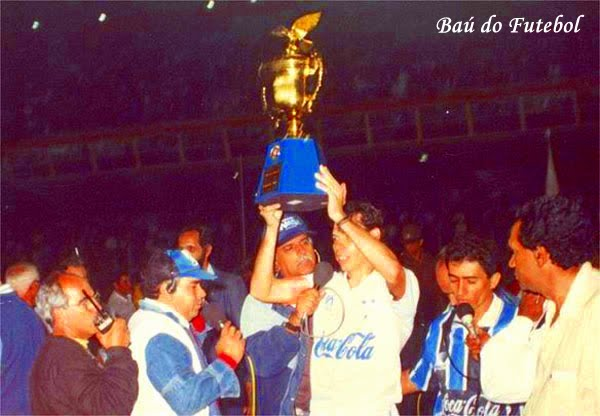
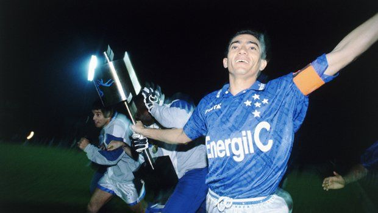
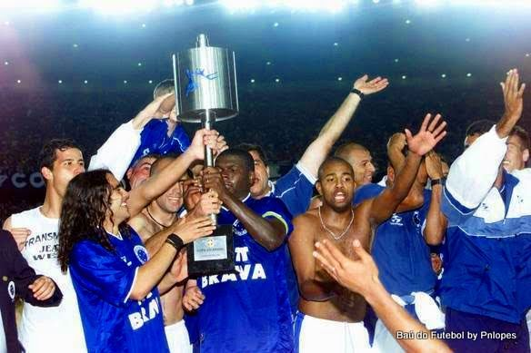
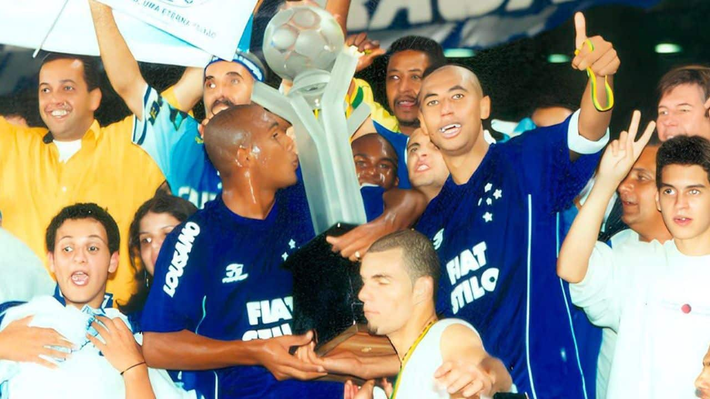
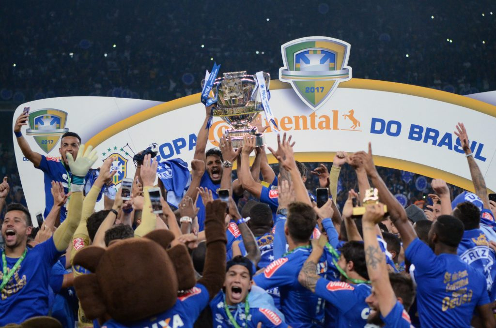
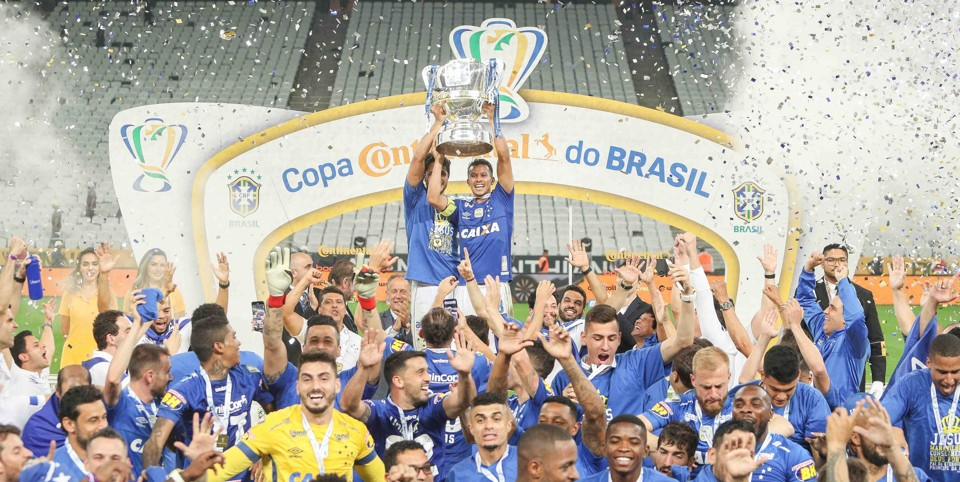

1993
Primeiro título da Copa do Brasil. O Cruzeiro venceu o Grêmio na final e mostrou força no mata-mata, revelando jogadores como Dirceu e Dida.

Bicampeonato. Cruzeiro voltou a dominar o torneio, destacando a consistência em jogos decisivos. Foi uma época de fortalecimento do clube nacionalmente.

Terceiro título. Um Cruzeiro forte na era pós-1997, mantendo tradição no mata-mata. Esse título consolidou o clube como especialista na competição.

Quarto título. Ano histórico, porque o Cruzeiro conquistou a Copa do Brasil e o Brasileiro no mesmo ano, mostrando força total no futebol nacional.

Quinto título. Depois de 14 anos sem ganhar, o Cruzeiro retornou ao topo com destaque para jogadores como Sassá e Thiago Neves, vencendo o Flamengo na final.

Sexto título e bicampeonato consecutivo. O Cruzeiro se firmou como “rei da Copa do Brasil”, mostrando tradição e regularidade na competição.
